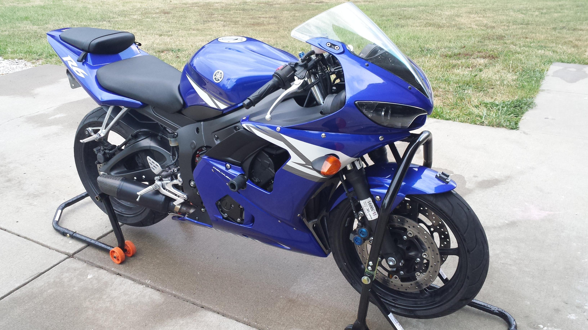
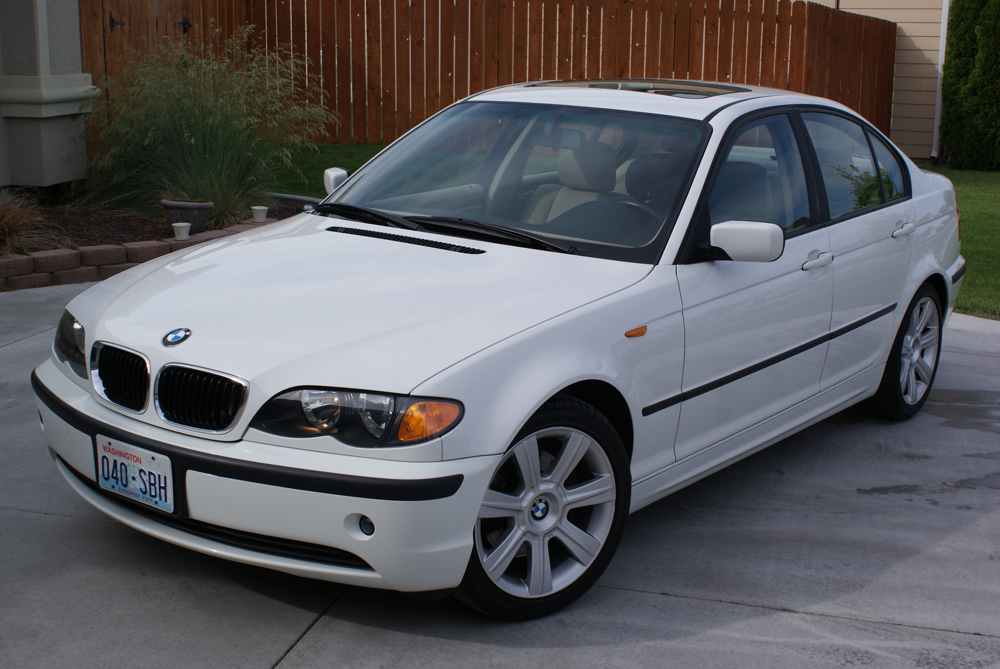

My Hobbies
Homepage
I have many hobbies, many of which stem from my interest in engineering.
I love cars and sportbikes. I have a 2004 Yamaha R6, and a 2005 BMW 325i 5-speed standard (both pictured below).
My other smaller hobbies include photography and watchmaking.

